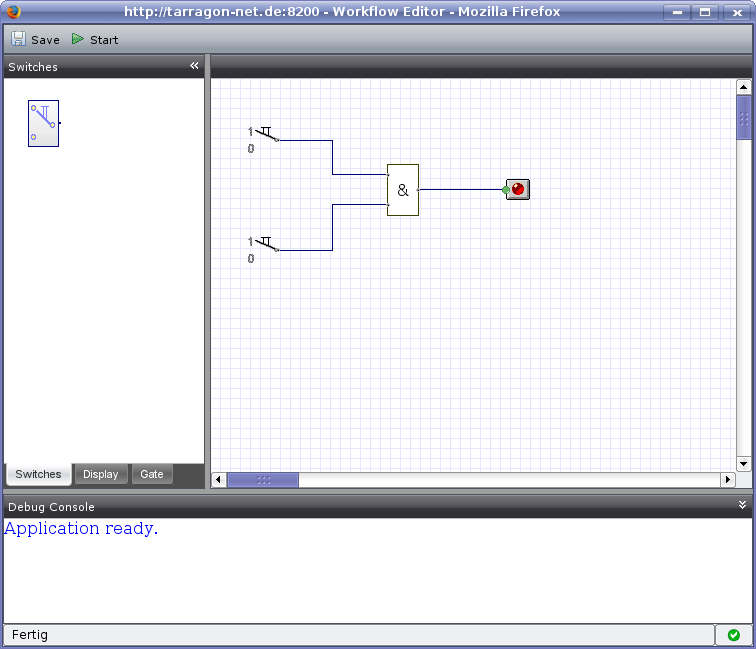

Be in mind:
The DigitalSimulator is currently in the
ramp up
. So - there are only a small set of digital objects available. It's YOUR turn to extend the simulator via JavaScript and provide your new digital object to the community.
